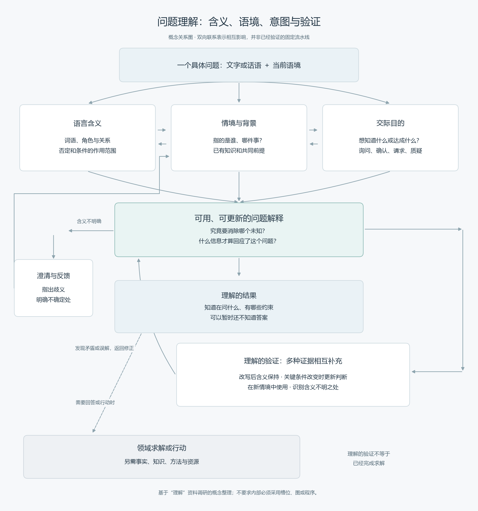

针对“理解”的调查资料
收集日期：2026-11-05。27份去重资料，其中25项主要参考、2项核查有限的扩展阅读。原始链接、实际读取范围和证据边界保存在各项登记中。
- 打开完整调研报告与资料库
- 打开问题理解图（SVG，可放大） · PNG图片 · Mermaid图示源文件
- AI：机制、意义与验证证据
- 人类：语境、情境表征与沟通目的
- 问句：所问内容、交际意图与求解
- 来源总登记 · 综合主张与来源对应 · 复制完整性校验


问题理解图
这是一张概念关系图，不是已被验证的人脑或AI固定流水线。

原始研究存档说明
12个原始研究文件按字节复制，原件保留。build_research.py与AUDIT.json作为研究构建存档保留；该脚本重建时另依赖原实验目录。直接阅读此页和REPORT.html不需要运行脚本。